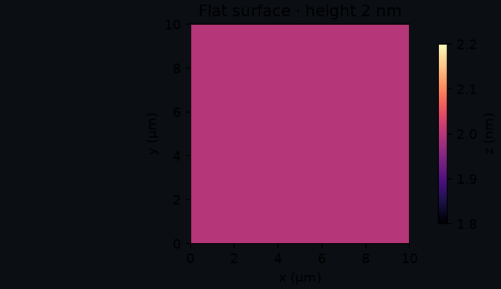
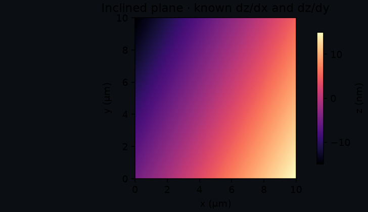
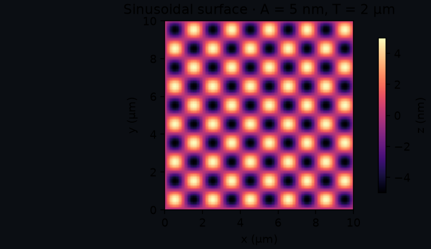
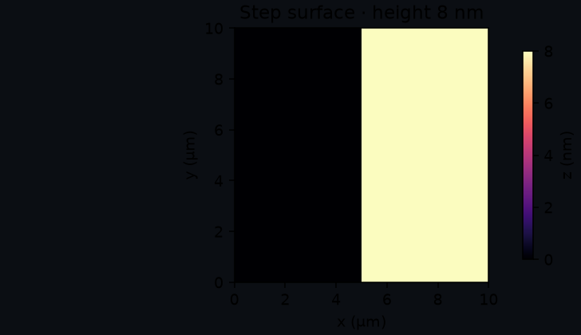
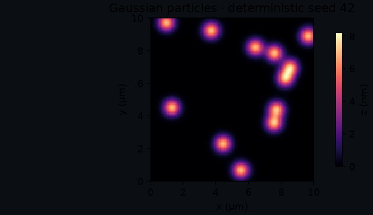

SPM-Kit Phantoms · Synthetic truth
Truth → corruption → observation → evidence
Phantoms creates analytical surfaces with known parameters, applies explicit corruption sequences and exports the clean truth and observed data as separate scientific objects.
Role in one sentence¶
Phantoms defines numerical truth before an algorithm sees the data. It does not replace physical validation and does not simulate every microscope effect.
Problem it solves¶
An experimental image contains realism but the underlying exact surface is usually unknown. A deterministic phantom supplies the missing counterpart: a clean numerical object whose slope, amplitude, wavelength, step or particle parameters are known before leveling, filtering, segmentation or metrology.
Simple phantoms are diagnostic instruments, not toy data.
What it does¶
- generates five current surface families with physical X/Y size and Z units;
- uses
numpy.random.Generatorfor stochastic cases; - applies five declared corruptions without silently replacing clean truth;
- records ordered corruption names and requested parameters;
- preserves masks for spikes and missing lines;
- exports clean and observed arrays in separate NPZ files;
- computes canonical array SHA-256 from normalized dtype, shape, byte order and C-order bytes;
- computes normalized manifest SHA-256 and separate compressed-artifact hashes;
- records the CLI corruption seed in observed-bundle manifests.
What it deliberately does not do¶
- analyze its own outputs or import SPM-Kit Core;
- claim that a generated surface is a certified reference material;
- simulate tip convolution, feedback dynamics, detector electronics or every instrument artifact;
- make an arbitrary corruption physically representative merely because it looks familiar;
- promote synthetic recovery into universal experimental validity.
Installation and first command¶
The package is not on PyPI.
git clone https://github.com/kegouro/spmkit-phantoms.git
cd spmkit-phantoms
python -m venv .venv
source .venv/bin/activate
python -m pip install -e ".[dev]"
spmkit-phantoms --help
spmkit-phantoms --outdir cases --seed 42
The current CLI generates flat_0nm/ and inclined_noisy/. The latter applies
Gaussian noise followed by isolated spikes with the declared seed.
Ground-truth contract¶
| Field | Meaning |
|---|---|
| clean surface | immutable reference object containing analytical array, field of view, unit, model and original parameters |
| observed surface | new array after one or more ordered corruptions, linked back to clean truth |
| analytical parameters | values supplied to the generator; the basis for expected quantities |
| field of view | x_size_m and y_size_m, independent from pixel count |
| Z unit | current generators use metres and preserve the unit in exports |
| seed | clean stochastic model seed or exported corruption RNG seed when supplied |
| masks | boolean arrays identifying localized spikes or missing lines |
| canonical hash | scientific-array identity independent from NPZ filename/compression metadata |
| artifact hash | SHA-256 of the actual compressed file |
| normalized manifest hash | deterministic hash of sorted compact JSON before the hash field is added |
An array hash identifies the numeric array together with dtype and shape. It does not prove authorship, authenticity, physical calibration or suitability.
Surface catalog¶
The plots below were regenerated by scripts/gen_phantom_catalog.py against the
current Phantoms source. They are labeled numerical examples, not microscope images.

Flat surface
Definition: $z(x,y)=h$.
Question: does preprocessing introduce texture or remove a constant offset as intended?
Known: height, zero range, Sa/Sq after declared centering.
Limit: no morphology or instrument response.

Inclined plane
Definition: $z=s_xx+s_yy+z_0$.
Question: can leveling recover/remove a known plane without residual structure?
Known: both slopes, offset and full height range.
Limit: ideal linear tilt only.

Sinusoidal surface
Definition: $z=A\sin(2\pi x/T_x)\sin(2\pi y/T_y)$.
Question: are amplitude, roughness and spatial-frequency peaks recovered?
Known: amplitude, periods and sampled phase grid.
Limit: periodic ideal field and finite-grid sampling.

Step surface
Definition: left field 0, right field $h_s$ at a declared split ratio.
Question: is step height preserved through filtering, leveling or export?
Known: height and split position.
Limit: infinitely sharp ideal edge with no tip convolution.

Gaussian particles
Definition: seeded sum of Gaussian peaks with declared count, width and amplitude.
Question: does segmentation recover particle count/size under controlled overlap?
Known: generator parameters and deterministic realization.
Limit: mathematical peaks, not tip-convolved physical particles.
Corruption catalog¶
| Corruption | Approximates | Parameters | Stochastic | Mask | May disturb | Does not model |
|---|---|---|---|---|---|---|
AdditiveGaussianNoise |
additive measurement noise | sigma in Z units |
yes | no | all amplitude metrics and spectra | colored noise, electronics or feedback physics |
LineOffsets |
independent slow-axis line offsets | per-line sigma |
yes | no | row alignment, roughness, low-frequency PSD | line curvature or controller history |
SlowLinearDrift |
linear drift along row index | slope_y per line |
no | no | plane/row leveling and large-scale slope | nonlinear thermal drift or creep |
IsolatedSpikes |
sparse impulsive artifacts | fraction, amplitude |
yes | spikes_mask |
Sz, tails, segmentation and filters | realistic tip contamination or feedback transient shape |
MissingLines |
line freeze/repeat | fraction |
yes | missing_lines_mask |
texture, PSD and continuity | data-loss recovery or arbitrary scan dropout |
Corruption order is part of the case. Noise then spikes is not assumed equivalent to spikes then filtering/noise.
Verified end-to-end example¶
1. Generate clean and observed bundles¶
cases/
├── flat_0nm/
│ ├── clean.npz
│ └── manifest.json
└── inclined_noisy/
├── clean.npz
├── observed.npz
├── masks.npz
└── corruption_manifest.json
2. Inspect identity and provenance¶
Check rng_seed, ordered applied_corruptions, clean/observed canonical array
hashes, artifact hashes, mask hashes, dimensions, dtype, physical scales and units.
3. Analyze the observed array with Core¶
spmkit info cases/inclined_noisy/observed.npz
spmkit analyze cases/inclined_noisy/observed.npz --level plane --output results/
The NPZ reader exposes the height channel as Z-Axis and retains the original
model name as metadata.
4. Evaluate recovery through Validation¶
From an environment containing all three source checkouts:
spmkit-validation campaign campaigns/smoke_v0.1.yaml validation-runs/ \
--spmkit /absolute/path/to/spmkit
spmkit-validation report validation-runs/smoke_v0.1/cases.csv validation-runs/report/
The smoke campaign writes numerical differences with
TODO-SCIENTIFIC-DECISION; it deliberately does not manufacture a PASS before
a tolerance and claim are frozen. Use a retained campaign for published evidence.
Architecture and integration¶
surface parameters → SurfacePhantom (clean)
↓
corruption.apply(clean, rng)
↓
ObservedPhantom + masks
↓
NPZ artifacts + normalized JSON manifest
↓ manual/declared handoff
Validation campaign input
- Phantoms → Validation: implemented in current campaign code and documented manual bundles.
- Phantoms → SPM-Kit Core: implemented NPZ handoff.
- Phantoms → Fathom: the NPZ can be opened through Core routing; this is inspection, not validation.
- Phantoms → Data Hunter: no dependency or automatic link.
Scientific status and limitations¶
Surface equations, deterministic seeds, corruption identity paths and bundle
export have automated tests. Synthetic recovery can support LEVEL 2 for a
named algorithm and case. A campaign comparing a declared independent reference
may support a narrow LEVEL 3 claim. Phantoms alone grants neither.
- Corruptions are controlled approximations, not a complete acquisition simulator.
- No current model includes full tip/sample convolution or feedback-loop physics.
- Canonical hashing normalizes array identity, not semantic equivalence between different grids.
- Before 1.0, pin the exact Phantoms commit and manifest schema in campaigns.
- Physical validation still requires calibrated experimental references.
Contribute¶
Add a surface or corruption only with explicit parameters, units, deterministic behavior, clean/observed separation, an export round-trip and a validation question. Visual realism without a known quantity is not enough.
Repository · Workflow: roughness recovery · Next: Validation